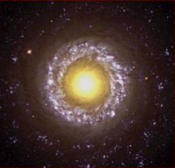
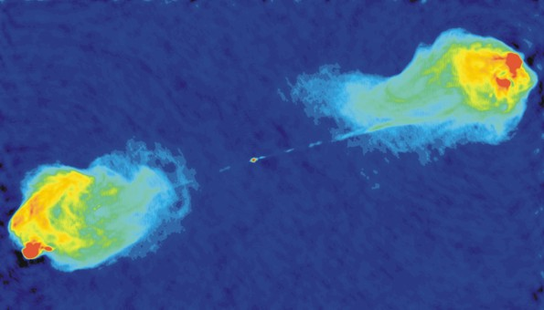
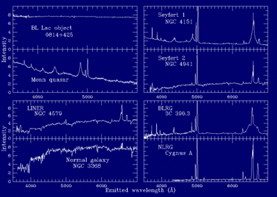
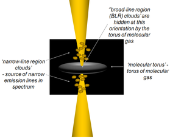
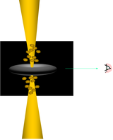
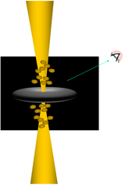
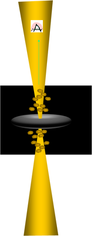

Many galaxies have very bright nuclei, so bright that the central region can be more luminous than the remaining galaxy light. These nuclei are called active galactic nuclei, or AGN for short. Much of the energy output of AGNs is of a non-thermal (non-stellar) type of emission, with many AGN being strong emitters of X-rays, radio and ultraviolet radiation, as well as optical radiation. AGN can vary in luminosity on short (hours or days) timescales. This means that the light or energy emitting source must be of order light hours or light days (respectively) in size, and gives clues as to the energy mechanism.
Carl Seyfert discovered the first class of AGN, that are now named after him. The nuclei of Seyfert galaxies display emission lines. Type 1 Seyfert galaxies have both narrow and broadened optical spectral emission lines. The broad lines imply gas velocities of 1000 – 5000 km/s very close to the nucleus. Seyfert type 2 galaxies have narrow emission lines only (but still wider than emission lines in normal galaxies) implying gas velocities of ~ 500-1000 km/s. These narrow lines are due to low density gas clouds at larger distances (than the broad line clouds) from the nucleus.
Later, Seyfert type 1 galaxies that showed intermediate properties were divided into sub-classes. For example, a Seyfert 1.9 is a Seyfert 1 in which only broad Halpha (653 nm) emission lines are seen, and a Seyfert 1.5 has broad and narrow Hbeta (486 nm) emission line components that are similar. Seyfert galaxies comprise ~ 10% of all galaxies.

As well as Seyferts, other galaxies are also classified as AGN. These include radio galaxies, quasars, blazars and LINERs.
Radio galaxies, as their name implies, are strong emitters of radio emission. These are elliptical galaxies with nuclear radio emission, often accompanied by single or twin radio lobes (straddling the galaxy) that can be Mpc-sized. The radio emission is non-thermal, due to fast moving electrons that spiral in magnetic fields, producing synchrotron emission. Sometimes the radio lobes and nuclear radio emission are joined by narrow radio jets (see Cygnus A).

Credit: Image courtesy of NRAO/AUI; R. Perley, C. Carilli & J. Dreher
Quasars are the most luminous AGN. The spectra of quasars are similar to Seyferts except that stellar absorption features are weak or absent, and the narrow emission lines are weaker relative to broad lines as seen in Seyferts.
Blazars are a class of AGN that are radio sources and consist of both Optically Violent Variables (OVVs) and BL Lac objects. They are highly variable AGN that do not display emission lines in their spectra.
BL Lac objects are named after BL Lacertae, the class prototype, a highly variable AGN. It was originally thought to be a variable star.
Low Ionisation Nuclear Emission-line Region galaxies (LINERs) are very similar to Seyfert 2 galaxies, except as their name implies the low ionisation lines like [O I] and [N II] are quite strong.

AGN are thought to be powered by centrally located, supermassive black holes. The central regions of all AGN are thought to be similar and are explained by the Unified Model of AGN. The variation in AGN properties is thought to be related to the line of sight we have into the central region of the AGN.
In the Unified Model, AGN have a central supermassive black hole surrounded by a gaseous accretion disk of ~ a few light days across.
Moving outwards from the centre of the AGN fast moving gas clouds exist at a distance ~ 100 light days, known as the ‘broad line region’ which produce the broad emission lines seen in some AGN spectra.
Continuing outwards, at ~ 100 light years in diameter, a molecular doughnut or torus of colder gas exists. It is optically thick, and if viewed edge on will block out the accretion disc and broad line region from view.
At a distance of ~ 1000 light years, the ‘narrow line region’ exists. It is comprised of small, low density gas clouds moving at lower velocities (than the broad line region). It is these clouds that are energised (usually close to the direction of the radio jets) and they produce the narrow emission lines seen in some AGN spectra.

Radio (synchrotron) emission is produced in many AGN, collimated into jets and propagates in a direction that is perpendicular to the plane of the accretion disc. These radio jets are prominent in many radio galaxies and can be as large as several Mpc in size. Many jets end in broadened and diffuse radio lobes.
When the molecular torus is viewed edge-on, the black hole, accretion disk and broad line region are hidden. Thus when spectra are taken we see emission lines from the narrow region only, and some infrared emission from the torus itself. In this case we detect Seyfert 2, (narrow line) radio galaxies and quasars.

If our line of sight allows us to view into the central region – for example, the torus is tilted at 45 degrees – both broad and narrow lines are visible. In this case we detect Seyfert 1, broad line radio galaxies and quasars.

If we can look directly into the torus (if it is tilted at 90 degrees to our line of sight), we look face-on at the nucleus and jets. Radiation from the jet moves close to the speed of light and can be beamed, and can be variable on periods from hours to days. This emission can dominate any narrow or broad lines and the spectra will appear featureless. In this case blazars, BL Lacs or OVVs are detected.
